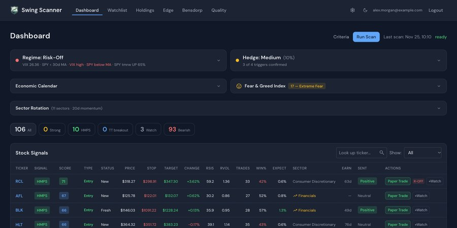
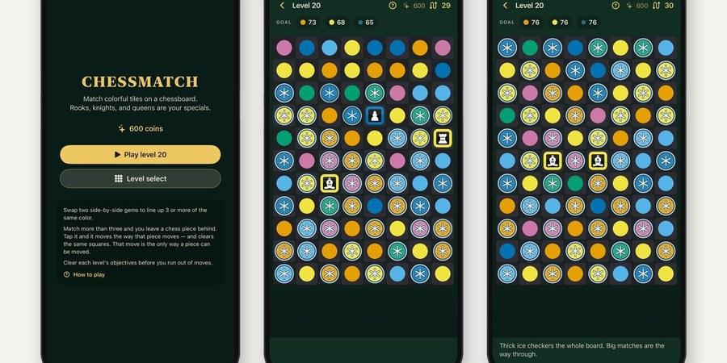
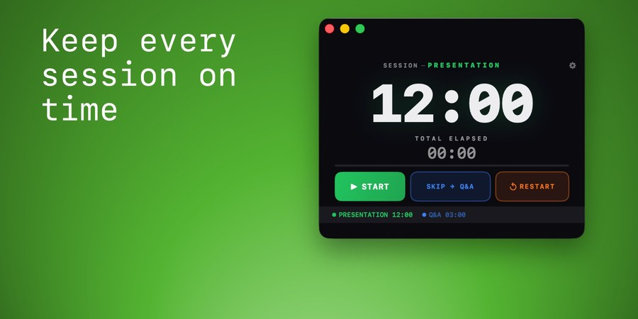

Independent projects I build on my own time, mostly with AI coding agents. They keep me hands-on with the technology and let me try ideas end to end, from the first sketch to a working product.

A stock screening and automated investment platform I designed and built with an AI coding agent, turning a labor-intensive manual trading routine into a system that scans, scores, and manages positions.

A match-3 puzzle game for iOS that teaches how each chess piece moves by making the pieces the core mechanic: every piece clears the board exactly the way it moves in chess.

A focused Mac timer, available on the Mac App Store, that stays visible above every app so classes, critiques, presentations and Q&A stay on time.